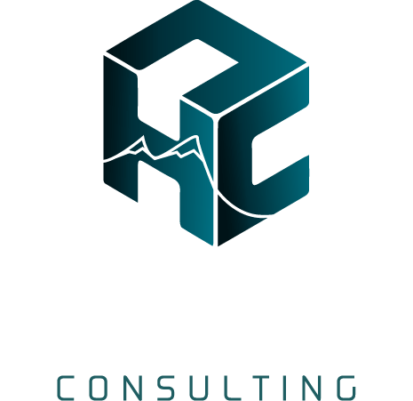
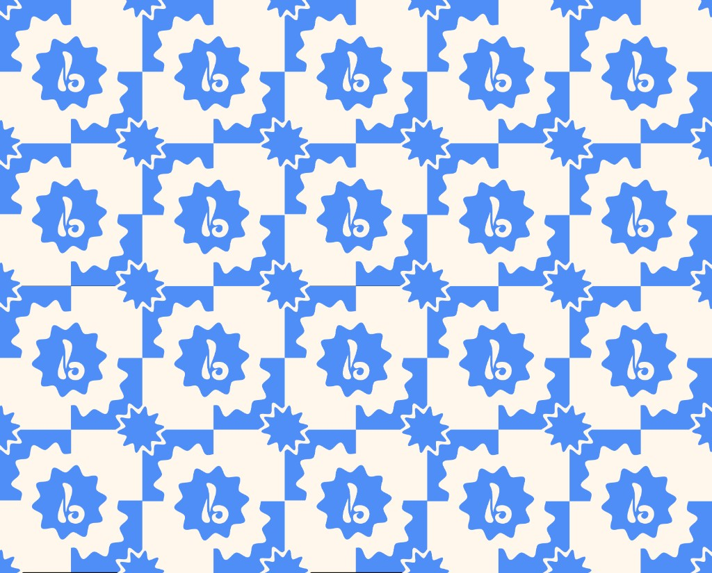

our work
the jolly mammoth creative footprint
Click a case study to expand it. Each project follows the same structure: problem → solution → details.
2026 Branding and Identity Dalila Jane Dalila Jane is a rising independent artist with a sound worth paying attention to. We built her a fully custom website and produced her visual identity from the ground up — giving her music a real home and her fans somewhere to actually land.

problem
Dalila met Jolly in the midst of building something real. The music was there, the talent was there, but the infrastructure around it wasn't. No releases, no visual identity, no platform that felt like her. Most independent artists default to link aggregators and streaming profile pages. They work, technically. But they don't build anything. Every visitor arrives, clicks, and disappears back into Spotify or Instagram without ever connecting to the artist as a person or a brand. For an artist at the early stage of her career, that gap matters more than most people realize. The first impression a new listener gets shapes whether they become a casual stream or an actual fan. Without a real platform to anchor that experience, growth stays shallow.
solution
Jolly Mammoth built Dalila a fully custom on-brand website. Not a template dressed up with her photos, but a creative platform designed specifically around her as an artist and what her music feels like. The photoshoot came first. Before anything could be designed, she needed a real visual identity and enough assets to build with. Those images became the foundation of the site and her broader brand presence. The site itself gives fans somewhere to actually land. Music, visuals, her story — all of it in one place that feels like Dalila, not like every other artist page on the internet. Direct to fan rather than a hand-off to a third party service.
Independent artists are building businesses whether they think of it that way or not. Every release, every visual, every touchpoint is either adding to something or it isn't.
Dalila had the music. What she needed was the world around it to start catching up.
The custom site was never just about aesthetics. It was about giving her a platform she actually owns and one that grows with her, reflects her specifically, and gives fans a reason to remember rather than just stream and scroll past.
She had no releases when we started. After her second drop she's sitting at over 20,000 monthly listeners on Spotify and climbing. The music is doing the heavy lifting. The brand gives it somewhere to live.
2026 Custom Smart CRM High Cliff Consulting High Cliff Consulting is a soil testing and sewage design firm serving contractors and property owners across the region. We built a fully custom client onboarding and project management system that replaced a paper-based intake process with automated workflows, organized job tracking, and hands-free follow-up.

problem
High Cliff Consulting was doing serious technical work with a serious client load. The expertise was there. The operational infrastructure wasn't. Their packed schedule did not equate to them scaling and taking on more jobs. Every new client meant printed template sheets, handwritten notes, and a text chain that became the de facto project file. Onboarding was manual from start to finish. Follow-ups lived in memory. For a soil and sewage design operation where each job involves site data, test results, design specs, and permit timelines, that level of disorganization had a real cost, significant time per client and mental overhead. Plus, a ceiling on how many jobs could be managed at once before things started slipping. At roughly 250 clients each season, the old system wasn't a quirk anymore. It was a bottleneck.
solution
Jolly Mammoth built a fully custom client operations system for High Cliff. No generic software, no adapting their business/workflow to a template. The platform was configured specifically around how High Cliff's business actually runs. The system handles client intake through an automated onboarding sequence that collects site information, project details, and relevant documentation from day one. No printed sheets. No text chains. Everything lives in one organized client record from the moment a new job enters the pipeline. From there, automated follow-up sequences manage the sales process without the owner manually chasing anything. Open jobs are organized in a project management dashboard view that gives a clear picture of where every client stands, what's pending, and what needs attention.
Projected outcome: a minimum of one hour saved per client. Across 250 clients, that's 250 hours back. Or 6 weeks of full-time labor each busy season. How Jolly would you be with an extra 6 weeks?
There's a version of this problem that every successful small business operator knows. You built something real, clients trust you, the work is good. Yet, the back end of the business ops is held together with habits and memory instead of systems.
Emery at High Cliff wasn't disorganized. He was running a tight operation by force of will. The problem with that model is that it doesn't scale and it doesn't rest. Every new client added weight the system.
The Jolly Mammoth build started with understanding the actual workflow. Soil testing and sewage design isn't a linear process — there are site variables, permit dependencies, scheduling constraints tied to weather and inspections. The system had to reflect that reality, not flatten it into something generic.
What we delivered was less about adding technology and more about giving structure and efficency to something that was already working for over 20 years.
The intake sequence mirrors how Emery already onboards clients, just without the paper. We centralized all client data into one CRM that integrated with the project management tools. The project view reflects how he already thinks about his open jobs, just without the mental overhead of holding it all together himself.
The build is in its final stage. Early indicators suggest a minimum of one hour saved per client, and likely more as the automations fully take over the follow-up load.
2025 Hotel Front Desk Agent The Oxbow Hotel The Oxbow is a locally loved boutique hotel with genuine heart. We designed and built an on-brand full AI front desk system to handle bookings, guest inquiries, and concierge service around the clock, trained specifically on Oxbow, not the hotel industry at large.

problem
The Oxbow Hotel had something most hospitality businesses spend years trying to build: a real reputation. Guests loved the staff, the atmosphere, and the experience. The brand had soul. The problem was operational. Inquiries came in after hours with nobody to answer them. Reservations slipped when the front desk was stretched thin. Staff were spending their best energy fielding repetitive questions about room rates and amenities rather than actually serving guests in front of them. For a boutique property where the experience is the product, that gap mattered. The challenge wasn't fixing what made Oxbow great. It was building infrastructure around it so nothing fell through the cracks.
solution
Jolly Mammoth designed and built a completely digital front desk and conceirge system, fully integrated with Oxbow's existing property management software. The system handles inbound inquiries via voice and chat, quotes real-time availability and room rates, processes bookings, manages modifications and cancellations, and escalates to staff when a human touch is actually needed. Nothing about how the hotel operates changes. The system runs underneath it. The overnight shift especially changes. Not every hour needs full staffing when the system is handling inquiries, completing reservations, and keeping the guest experience intact while the building sleeps.
Projected outcomes: 80% self-service containment rate and 15-20% booking conversion uplift over baseline.
Boutique hotels live and die by feel. The second a guest interaction feels automated or generic, something irreplaceable gets lost. That tension was the central design challenge for this project. The owner telling me \"I think our brand is at our best when humans make the connection.\"
The answer wasn't to hide the technology. It was to make it genuinely a component of the team. The agent is trained on Oxbow specifically. The amenities, the local recommendations, the events, the property quirks. Guests get answers that sound like someone who actually works there.
Most AI systems in hospitality are trained on broad industry data. They can answer generic questions about check-in policies and parking because every hotel has those. But ask them about the best table at the restaurant down the street, or whether the local rooftop bar is open during a Tuesday evening event, and they fall apart.
We approached the Oxbow build differently. The knowledge base wasn't pulled from a template. It was built from the ground up around the specific property, the specific neighborhood, and the specific kind of guest the Oxbow attracts. The agent knows what the staff knows.
The result is a system that extends the front desk without diluting it. Staff get their attention back for the moments that actually require a human.
This project was built as a spec system to demonstrate full AI front desk capability. The demo is live.
2025 Marketing and Lead Gen M.A.S Exteriors A Western Wisconsin–based contractor delivering residential and commercial exterior solutions.

problem
M.A.S. Exterior Solutions came to Jolly Mammoth just before entering their second year in business. They had proven demand, early traction, and strong word-of-mouth locally but they hadn’t yet built the digital foundation needed to sustain and scale that momentum. Their brand presence was fragmented, their website wasn’t designed to convert traffic into leads, and marketing efforts hadn’t been systemized into a predictable growth engine. In a highly saturated local roofing market, M.A.S. needed more than “running ads.” They needed a brand and digital ecosystem that could earn trust quickly, stand out from competitors, and consistently turn interest into booked jobs.
solution
Under one tightly strategized game plan, Jolly Mammoth partnered with M.A.S. to build a unified growth system. We redesigned and rebuilt the M.A.S. website from the ground up with a conversion-first mindset — prioritizing clarity, credibility, and ease of action for homeowners. In parallel, we launched and optimized Google Ads campaigns to capture high-intent local search traffic, while also establishing a consistent organic social presence to reinforce brand legitimacy and community trust. Rather than treating each channel as a silo, every touchpoint worked together: ads drove traffic - the website converted - social content reinforced credibility - trust and messaging closed the loop.
M.A.S. Exterior Solutions didn’t need a flashy rebrand or abstract marketing theory. They needed a system that matched how real homeowners make decisions: quickly, emotionally, and with a heavy emphasis on trust.
We began by clarifying their positioning — a family-owned, locally based contractor focused on honest service and craftsmanship guarantees. From there, we translated that identity into a website experience that spoke plainly, showed proof, and guided visitors toward clear next steps.
On the paid side, Google Ads were structured to prioritize bottom-of-funnel intent — homeowners actively searching for roofing and exterior solutions — while ongoing optimization ensured spend stayed efficient in a competitive market. At the same time, organic social content added a human layer to the brand, showcasing real projects, real people, and real work happening in the community.
The result wasn’t just more visibility — it was alignment. M.A.S. moved into their second year with a cohesive digital presence, a clearer brand narrative, and a marketing foundation designed to support steady, long-term growth in a crowded local landscape.
2025 App Development Brainthoven Repositioning a legacy early-childhood, brain-based, music education program into a scalable, digital-first platform and brand.

problem
Brainthoven had a strong, proven early-childhood music curriculum, but it wasn’t packaged for scalable growth. The brand lacked a clear digital home, consistent messaging, and a structured way for parents and educators to understand the program’s value, explore offerings, and take the next step. Without a cohesive identity and storefront-ready web presence, the curriculum’s impact was hard to communicate—and harder to convert into consistent demand.
solution
Jolly Mammoth partnered with Brainthoven to guide the brand into its next chapter by leading a full brand identity refresh, including a new logo and visual system, while providing creative support throughout the redevelopment of the curriculum. The goal was to transform a proven in-person program into a cohesive, digital-first offering now being developed under the rebranded product name Sounds Smart. As the curriculum continues through final development, we are laying the groundwork for long-term growth by building an organic content strategy to establish early awareness and trust, with plans to transition into paid advertising or audience-based funnels by mid-2026. With content production underway and a clear roadmap in place, the foundation is set for scalable growth when the product is ready to launch.
At its core, this project wasn’t about modernizing a curriculum — it was about restoring belief. Brainthoven was built on real results and decades of experience, but time and format had narrowed its reach. Our role was to help translate that depth of knowledge into a brand and product that could exist beyond a single physical space, without losing the care and intention that made it effective in the first place.
Through the development of a clear brand foundation and the early stages of curriculum productization, Brainthoven has regained momentum and direction. With the rebranded Sounds Smart program taking shape and a long-term growth strategy in place, the business is no longer constrained by geography or outdated delivery models.
Today, Brainthoven stands on a renewed brand platform, with curriculum development actively progressing and a clear path forward for growth. With the name changed to Sounds Smart, the work is no longer limited by geography — and the marketing launch phase is ready when the curriculum ebook is complete.
2024 Branding and Identity QueuedUp Shifting a music platform’s narrative from product-first to audience-first.

problem
Queued Up entered the market with a strong product vision but a disconnect between how the brand was positioned and who it needed to reach. Early messaging leaned investor-focused and technical, which created friction for the actual target audience: pop-culture enthusiasts, music fans, and creators looking for discovery and community.
solution
Jolly Mammoth was brought in to help reposition Queued Up’s brand and narrative. We led a shift in messaging away from abstract platform language toward culture-driven communication — building a brand guide, visual assets, and copy frameworks designed to resonate emotionally with potential users in their target audience rather than pitch hype. The focus was on clarity, tone, and cultural relevance.
Queued Up didn’t need to change what it was building. It needed to change how it spoke to its consumer.
By grounding the brand in shared music experiences and audience identity, Queued Up was able to align its outward presence with the community it aimed to grow. This repositioning set the stage for organic user acquisition and long-term brand equity before scaling paid marketing efforts.
As of Dec 2025 Queued Up has hit 1,000 active users with a goal of 10,000 to secure further funding. As investment stages continue, Jolly Mammoth stands close by to help this hit the market. Now the question is, what's up next for Queued Up?
2025 Branding and Identity Savage Fit Boxing Positioning a community-driven fitness studio to better reflect its culture, value, and momentum.

problem
The gym had a loyal core community but faced a common crossroads: invest in growth or prepare for transition with new staff. With ownership exploring a potential sale, the priority shifted from long-term rebranding to short-term value creation — increasing perceived brand strength, improving digital presence, and stabilizing membership interest.
solution
Jolly Mammoth executed a focused marketing sprint. We rebuilt and refined the website, clarified messaging, and leveraged existing social media content to elevate the gym’s brand perception. Rather than overhauling operations, the strategy centered on making the gym look organized, active, and valuable to both members and potential buyers.
Sometimes marketing is not about immediate expansion, but about positioning. In this case, the priority was not aggressive growth or long-term rebranding, but clarity and presentation during a critical moment.
Savage Fit Boxing was at a crossroads. Re-invent (and re-invest into) what the gym used to be OR plump it up to add some value before selling.
With an established brand like Savage Fit, we primarily focused our efforts on the customer journey, all the way to them entering the gym. This was done with a complete rejuvenation of their content strategy. Starting with their socials and integrated all the way into their digital funnel.
By tightening the gym’s digital presence and refining its visual identity, years of consistent effort, community building, and operational work were translated into something more visible and tangible. The result was a brand that more accurately reflected the strength of the gym’s culture and membership base, reinforcing its value to both current members and potential buyers during an important transition period.
want to work together?